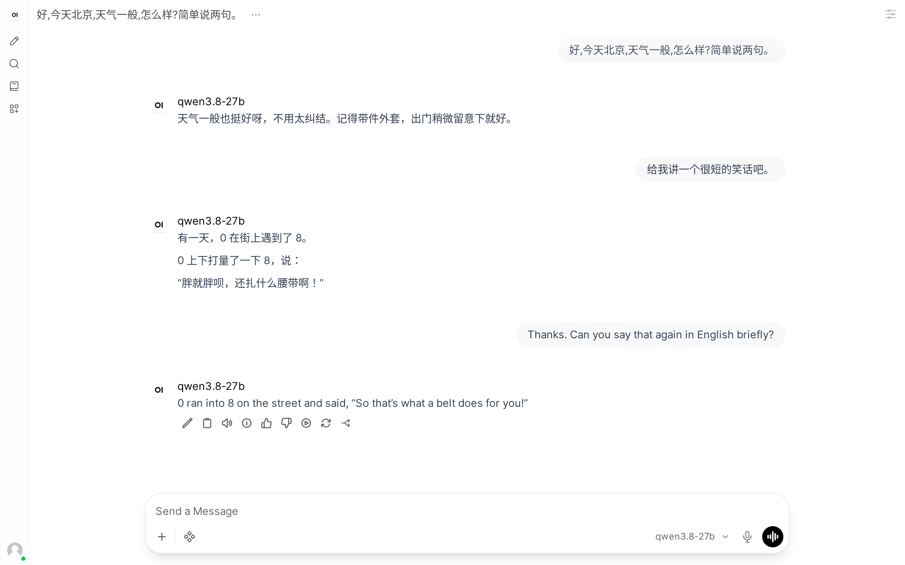

Local Voice Buddy
A voice assistant that lives on your mini PC. You talk, it answers out loud, in Chinese or English. The model, your voice and your chats never leave the machine: no cloud, no account, no subscription.
住在你迷你主机里的语音助手。你说话，它开口回答，中文英文都行。模型、你的声音和聊天记录都不离开这台机器：不用云、不用注册、不用订阅。

A voice call, as it appears in the chat afterwards: two questions in Chinese, one in English, all spoken, recognized and answered on the PC.
一次语音通话结束后的聊天记录：两句中文、一句英文，识别、思考、朗读全在这台电脑上完成。
What you get你会得到什么
A real 27B brain真正的 27B 大模型
Qwen3.8-27B, a 27-billion-parameter open model, on the built-in Radeon GPU.
Qwen3.8-27B，开源模型，跑在主机自带的 Radeon 核显上。
Ears and a voice会听也会说
Whisper speech recognition and the CosyVoice3 voice run on the Ryzen AI NPU, the chip most owners never use.
Whisper 语音识别和 CosyVoice3 语音合成跑在锐龙 AI 的 NPU 上，就是那块大多数人从来没用过的芯片。
Any voice you like想要什么声音都行
10 seconds of recording and a line of text, and it answers in that voice.
录 10 秒声音、写下说了什么，它就用这个声音回答你。
From the sofa躺沙发上也能用
Open WebUI works in any browser; install it on your phone's home screen and call it like an app.
Open WebUI 在任何浏览器里都能用，装到手机桌面，像打电话一样跟它聊。
How it sounds听听效果
The speech side of Local Voice Buddy, from its npu-cosyvoice project page.
Local Voice Buddy 的语音部分，来自 npu-cosyvoice 项目页。
What you need需要什么
| Computer电脑 | Mini PC or laptop with a Ryzen AI 7040 / 8040 (e.g. 7840HS, 8845HS)带 锐龙 AI 7040 / 8040 的迷你主机或笔记本（如 7840HS、8845HS） |
| Memory内存 | 32 GB |
| Disk硬盘 | 60 GB free60 GB 空闲 |
| System系统 | Linux 6.14+ (tested on Ubuntu 26.04) with DockerLinux 6.14 以上（在 Ubuntu 26.04 上测试）并装好 Docker |
Install安装
git clone https://github.com/YuhuaBillChen/local_voice_buddy.git cd local_voice_buddy ./install.sh
The installer checks your machine, explains each system change before asking for your password, downloads about 30 GB and starts everything. Then open http://localhost:3000 and press the voice button.
安装脚本会先检查机器，每项系统改动都先解释再请你输入密码，然后下载约 30 GB 并启动。之后打开 http://localhost:3000，按语音按钮就能开聊。
Numbers实测
| Reply starts speaking说完到听到回答 | 8-10 s in a conversation (~20 s for a new chat's first message)（新对话第一句约 20 秒） |
| Memory, everything running全部运行时内存 | ~24 GB of a 32 GB machine（32 GB 机器） |
| Model speed模型速度 | 7-11 tokens/stoken/秒 |
Ryzen 7 8845HS, 32 GB. Details in measurements.md.
锐龙 7 8845HS，32 GB。详见 measurements.md。